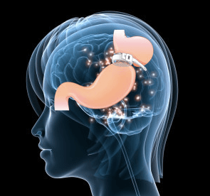

Anneau gastrique virtuel – Protocole 3 + 1
Principe
L’anneau gastrique hypnotique est une méthode naturelle et sans chirurgie qui reproduit, au niveau inconscient, les effets d’un anneau gastrique réel. Elle aide à manger moins, à retrouver la satiété rapidement et à savourer ses repas sans frustration.
Pourquoi ça fonctionne
Le cerveau ne distingue pas le réel de l’imaginaire sous hypnose. Lors de la séance, votre inconscient intègre l’idée d’un estomac plus petit : vous mangez naturellement moins, sans effort ni contrainte. Les résultats sont d’autant plus efficaces après un travail émotionnel préalable.
Déroulement du protocole (3 + 1 séances)
- Préparation émotionnelle : libération des émotions et croyances liées à la nourriture.
- Travail en profondeur : comprendre les besoins ou blessures cachés derrière la compulsion alimentaire.
- Pose de l’anneau virtuel : votre inconscient vit symboliquement la pose de l’anneau, ce qui amorce la transformation.
- Suivi offert : bilan des progrès, réajustement si besoin et ancrage des changements.
Les bienfaits
- Diminution naturelle de l’appétit : vous mangez moins sans vous forcer.
- Satiété retrouvée sans contrainte : arrêt du repas plus facilement et plus tôt.
- Perte de poids douce et durable : changement progressif et respectueux du corps.
- Réconciliation avec son corps : regard plus bienveillant et apaisé sur soi.
- Plaisir de manger en conscience : moins de compulsions, plus de choix conscients.
Plus qu’une simple méthode minceur, ce protocole propose un véritable processus de transformation intérieure, à votre rythme.
Tarif : Forfait
